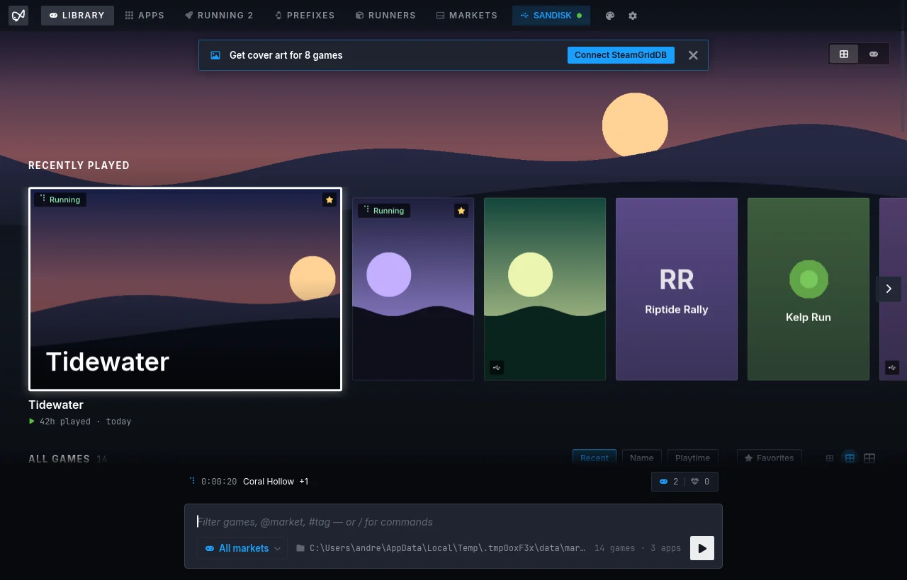
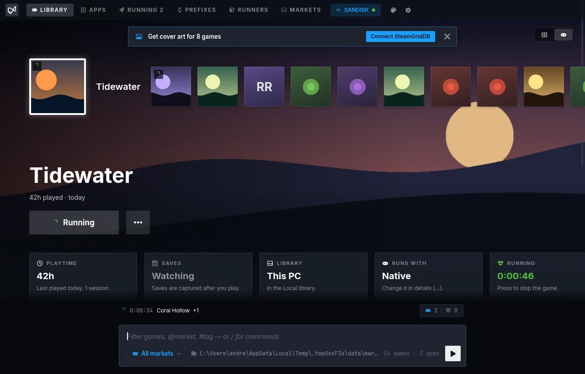
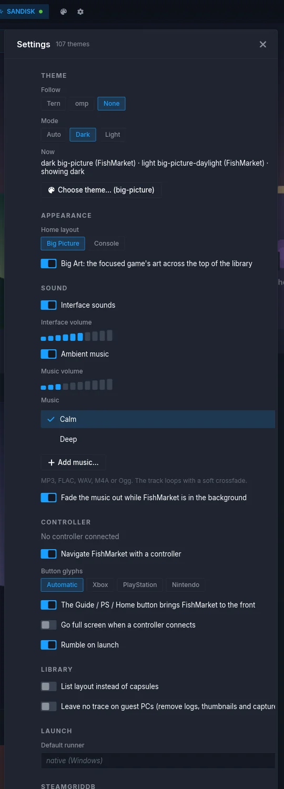
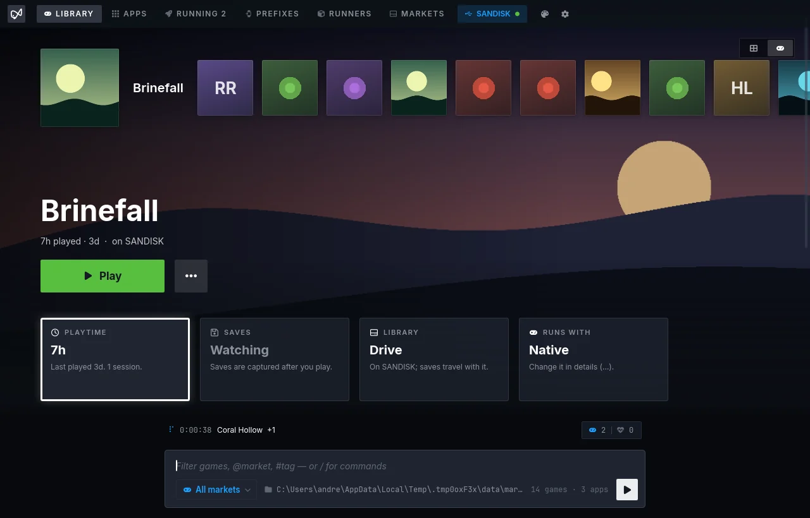
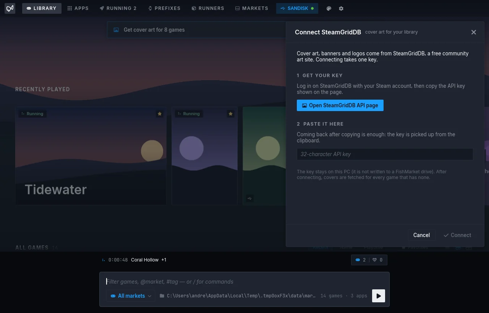
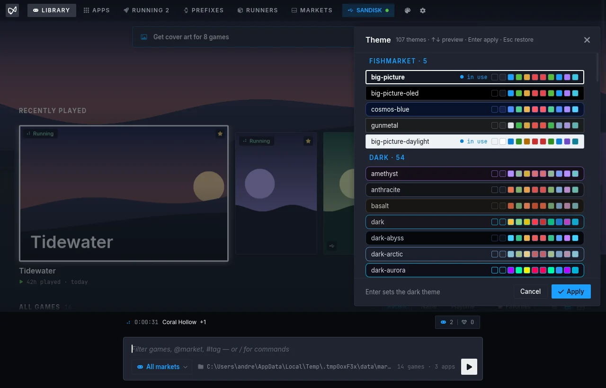
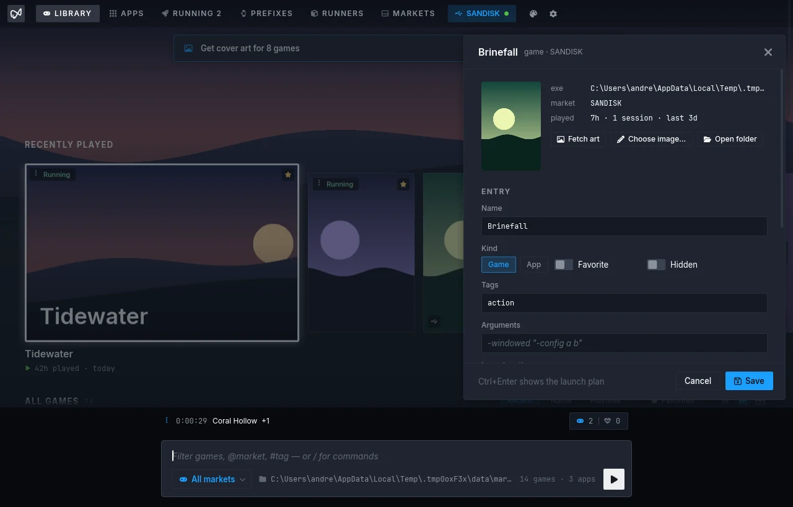
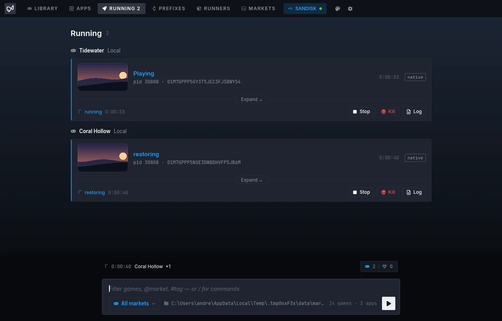

Your games, on every PC.
FishMarket is a Big Picture-style library and launcher for Windows games and apps. Put your library on a drive, and your games and saves come with you to any PC.

What it does
Big Picture library
Covers in mixed sizes, your recent games up front, and the focused game's art across the top (Big Art). Hard-edged themes after Steam's Big Picture, plus 100 more.
Console home
A PS5-inspired layout: one row of games, a big Play button, and cards for playtime, save sync and where the game lives.
Saves that travel
On a FishMarket drive, saves are restored before each launch and captured after it. If two PCs changed them, you choose which to keep.
Controller first
Xbox, PlayStation and Nintendo pads drive everything, with matching button hints, an on-screen keyboard and rumble on launch.
Sound and music
Soft interface sounds and ambient music that fades out while you play. Add your own MP3, FLAC, WAV, M4A or Ogg tracks.
Cover art in one step
Connect SteamGridDB with a free key: copy it on their site and FishMarket picks it up from the clipboard, then fetches every missing cover.
Your order, your tags
Drag covers into the order you want. Click a tag under the header to show only those games. Add a game or scan a folder right from the library.
Libraries anywhere
The Markets tab explains where your library lives and makes more: a drive that travels, or a second library folder on another disk.
How it works
One library, every computer
Put your library on a drive, plug it into a PC, and your games, playtime and saves are there. Here is what happens behind that, and what works today.
E:\ (exFAT) FishMarket-Windows.exe Windows app FishMarket-Linux Linux app (preview) FishMarket-macOS.app macOS app (in progress) FishMarket\ the one library: games list, art, playtime, saves Games\… the games themselves
One app per system, one shared library
A Windows .exe can't run on Linux or macOS, so each system gets its own build of the same app: same look, same features. On a FishMarket drive they sit side by side next to one library folder, each named for its system. You open the one for the computer you're on, and every build reads and writes the same FishMarket\ folder.
The drive uses exFAT, the one format all three systems can read and write. macOS can't write NTFS, and Windows and Linux can't read APFS.
| Windows | Runs the game directly, as normal. |
| Linux | Runs it through Proton (via umu, Steam's runtime) or Wine. |
| macOS | Runs it through a macOS build of Wine with a layer that turns Direct3D into Metal: DXMT for DirectX 10 and 11, Apple's D3DMetal for DirectX 12 (you add it yourself from Apple's Game Porting Toolkit), DXVK or WineD3D for older games. On Apple silicon, Rosetta 2 translates the game's x86 (Intel) code, through macOS 27; for macOS 28 and later the plan is ARM64 Wine builds based on FEX as they become available. |
Saves travel with you
Restore, play, capture. Before a game starts, FishMarket copies the latest saves from the drive to where the game expects them on that computer. After the game closes, it copies the changes back. If two computers changed the same game's saves since they last met, it asks which one to keep and moves the other to the drive's trash. It never merges and never silently overwrites. More on saves
Some things stay on each computer
On Linux and macOS each game gets a private fake C: drive (a Wine prefix). Those and the Wine or Proton engines stay on the computer, because exFAT can't hold them. The drive carries a recipe, so each computer rebuilds them. The first launch on Linux downloads Proton and the Steam runtime (about 1.5 GB), unless the drive carries offline kits.
No drive needed
Each build also works as a normal app with a library on the computer itself. Moving between computers only kicks in when you use a FishMarket drive. Make one with fmk market init E:\ --drive --name "Game Drive".
Limits
Games with kernel anti-cheat, or copy protection that rejects Wine, won't run on Linux or macOS. Games that must be installed (with drivers or services) can't be carried on a drive.
- WindowsAvailableDownload it below.
- LinuxPreviewA build is available below, but it has not yet run on a real Linux computer. Expect problems, and please report them.
- macOSIn progressThe groundwork is built; it needs testing on a real Mac before there is a download. It targets Apple silicon Macs with macOS 14 or newer.
Saves
Your progress, kept safe
Windows games keep saves in three kinds of places: their own folder, your user folders (such as AppData or Documents), and the registry. Only the game's own folder is on the drive. FishMarket looks after the rest.
From a shared list
FishMarket looks the game up in the Ludusavi manifest, a public list of save locations built from PCGamingWiki, and fills in the folders and registry keys it names.
By watching the game
On Windows, it notes new folders that appear while a game runs and suggests the likely ones. Nothing is used until you confirm it. In the Linux build each game has its own fake C: drive, so anything new there must be that game's, and the locations are exact.
From you
Add or remove locations in the game's details screen, or from the command line. Locations are written in a form every computer can resolve, such as "Local AppData", not a fixed path.
Named saves
Keep as many saves as you like for one game: a main run, a new game+, a friend's file. Pick which one a launch opens, and set a default.
When the game closes
Your choice per game: overwrite the current save (FishMarket keeps a few automatic backups), start a new save every time, or ask.
Tools
Rename, add a note, copy a save into a new one, back up now, export to a single .fmks file (or a folder) and import it elsewhere, or delete (it goes to the trash first).
Only what changed
Saves you're not playing are kept as .fmks packs: compressed, and a backup stores only the parts that changed since the save it came from. In a test on a 143 MB Minecraft world, a backup after a short session took 3.6 MB instead of 143 MB.
The game sees plain files
The save in use stays ordinary files where the game expects them. Packs are only for the saves on the shelf, backups and exports. Saves from 0.2 still load.
Checked, always
Every pack is read back in full after it's written, and every file is checked against its fingerprint when it's unpacked. A pack holds at most a handful of others' changes, so one damaged file can't take everything with it.
Check
FishMarket compares the saves on this computer with the copy on the drive. If this computer is behind, it restores. If they match, it does nothing. If this computer has changes the drive never got (say, from a game played outside FishMarket), it saves them to the drive first.
Restore
The drive's saves are copied into place: your user folders and registry on Windows, or the game's fake C: drive on Linux.
Play
The game runs as usual. FishMarket waits until it and every process it started have closed.
Capture
Changed files and registry keys are copied back to the drive. Files the game replaced or deleted go to the drive's trash first, so nothing is lost.
Two computers, two versions
If both this computer and the drive changed since they last met, FishMarket stops and shows both sides with their file times and sizes. You keep one; the other is kept as a save of its own, so you can load it later. It never merges and never picks for you.
Drive pulled mid-game
The saves stay on that computer, and FishMarket captures them the next time the drive is plugged in there. If you play on another PC first, you get the choice above instead of a silent overwrite.
Crash during a copy
A capture is staged on the drive and only counts once it finishes. If it is cut off, the next start puts the old files back from the trash and tries again.
Undo
The trash keeps the files replaced by the last five sessions. Files are compared by content, not by date, because Windows, Linux and exFAT disagree about timestamps.
Changed outside FishMarket
Edited a save with another tool, or played without FishMarket? Before anything replaces those files, FishMarket checks their contents, and if they changed it keeps them as a save first.
Without a drive
The same system runs on a single PC. There it acts as a backup: each session's changes are kept in your library, with the same trash.
Leave no trace
Playing on someone else's Windows PC? Turn this on and FishMarket removes its logs when it closes, and the game's save files from that PC once they are safely on the drive.
fmk saves status Tidewater # where the saves are and what happens at the next launch fmk saves manifest Tidewater # fill locations from the Ludusavi manifest fmk saves rules Tidewater --add '<winLocalAppData>/Example Studio/Tidewater' fmk saves capture Tidewater # copy this PC's saves to the drive now fmk saves resolve Tidewater --keep drive
Screens







Get started
Unzip and run
Extract the zip anywhere (for example C:\Games\FishMarket) and start FishMarket-Windows.exe. Nothing is installed; your library lives in %LOCALAPPDATA%\FishMarket.
Add your games
In the bar at the bottom, type /add to pick a game's .exe, or /scan to pick a folder and choose the games found in it.
Get the covers
Click Connect SteamGridDB on the library banner, open their API page, log in with Steam and copy your key. Come back, and FishMarket connects and fetches the art.
Play
Pick a game and press Enter (or A on a controller). FishMarket tracks your playtime and saves while it runs. The layout toggle at the top right switches between Big Picture and Console.
Take it with you (optional)
Turn a USB drive into a FishMarket drive, then add games to it. Start FishMarket-Windows.exe from the drive on any PC.
# from the folder you unzipped
fmk market init E:\ --drive --name "Game Drive"
fmk --market E:\FishMarket add E:\Games\Tidewater\Tidewater.exeControls
| Action | Keyboard | Controller |
|---|---|---|
| Move | Arrow keys | D-pad or left stick (triggers page) |
| Play / select | Enter | A (Cross on PlayStation) |
| Back / close | Esc | B (Circle) |
| Details | Ctrl+E | X (Square) |
| Favorite | in details (Ctrl+E) | Y (Triangle) |
| Switch tabs | Ctrl+1 … Ctrl+6 | LB / RB |
| Settings | gear icon | Menu (Options, +) |
| Big Picture ⇄ Console | toggle at the top right | View (Create, −) |
| Bring FishMarket forward | — | Guide (PS, Home) |
| Full screen | F11 | F11, or Settings › Controller |
| Filter and commands | type; / for commands | A on a text field opens the keyboard |
Download
The zip at the top of the page holds both builds side by side, ready to copy to a drive: FishMarket.zip, 43 MB. Or take just the one you need:
Windows Available
Windows 10 and 11, 64-bit. One zip with FishMarket-Windows.exe (the app) and fmk.exe (the command line).
Linux Preview
x86_64, glibc 2.31 or newer (Ubuntu 20.04, Debian 11, Fedora 32 and later). Runs Windows games through Proton (via umu) or Wine, sharing the same drive and saves. Not yet tested on a real Linux computer: please report what works. How it works
macOS In progress
The groundwork is built: FishMarket compiles for macOS and plans Mac launches. There is no download yet, because it has not been tested on a real Mac. It targets Apple silicon Macs with macOS 14 or newer, running Windows games through Wine with a Direct3D-to-Metal layer. How it works